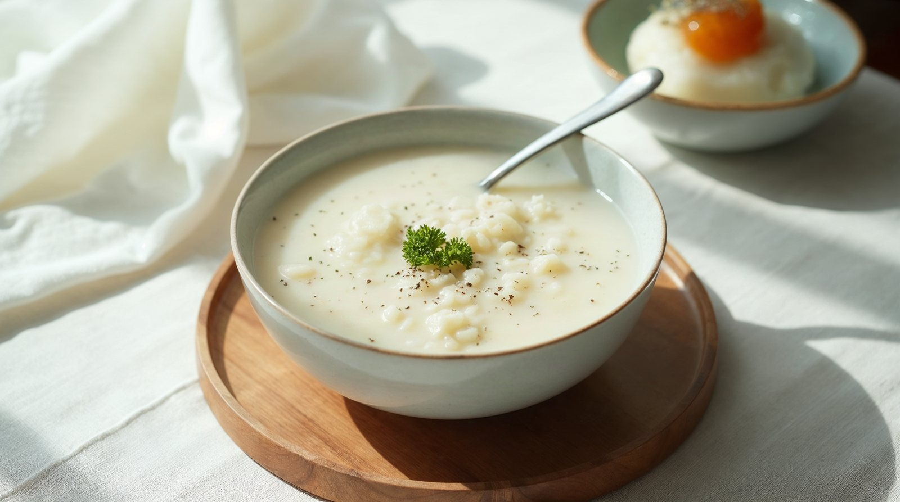
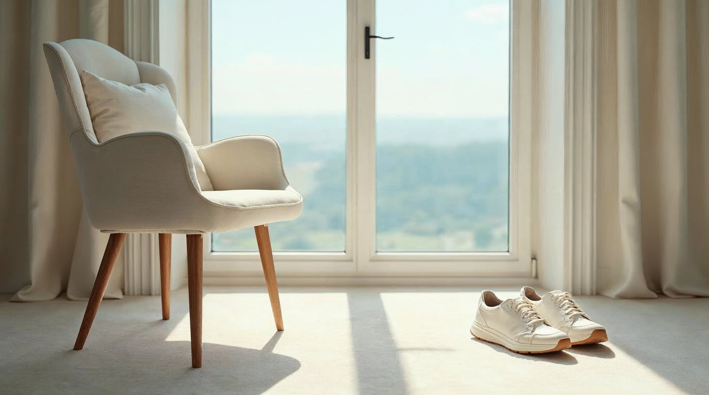
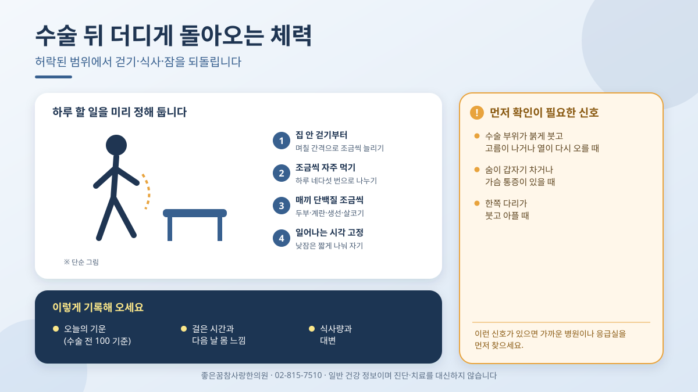

이종호 한의사 감수좋은꿈참사랑한의원 대표원장 (한의사 면허번호 19769)발행 2026-11-26 · 수정 2026-11-26
이 글의 차례
퇴원하는 날에는 집에 가면 금방 기운이 날 줄 알았습니다. 그런데 집에 와 보니 화장실 몇 번 다녀오는 것만으로 숨이 차고, 밥은 반 공기도 넘어가지 않습니다. 밤에는 수술 자리가 당기는 느낌에 몇 번씩 깨고, 낮에는 소파에 기대 앉은 채 시간이 흘러갑니다.
진료실에서 이런 말씀을 듣습니다. "수술은 잘됐다는데 몸이 예전 같지 않아요." "언제쯤 원래대로 돌아올지 모르겠어요." 큰일을 치르고 돌아온 몸에게 조금 더 시간을 주어도 괜찮다고, 저는 먼저 그렇게 말씀드립니다.
수술은 병을 고치기 위한 일이지만 몸 입장에서는 큰 사건입니다. 마취, 출혈, 조직의 손상, 며칠간의 금식과 누워 지내기가 한꺼번에 지나갑니다. 상처가 아물고 실밥을 푼 뒤에도 몸 전체의 기운이 돌아오기까지는 몇 주에서 몇 달이 걸리는 경우가 많습니다.
이 글에서는 수술 뒤 회복기에 흔히 겪는 모습과, 수술한 병원의 지침을 지키면서 일상에서 해 볼 수 있는 것들, 그리고 한의원에서 함께 살필 수 있는 범위를 차분히 정리해 보려 합니다.
왜 수술 뒤에는 이렇게 기운이 없을까요
수술을 받으면 몸은 상처를 회복하는 데 많은 힘을 씁니다. 손상된 조직을 다시 만들고, 염증을 가라앉히고, 잃은 피를 채우는 일이 보이지 않는 곳에서 이어집니다. 겉의 상처는 몇 주면 아물어도 속의 회복은 그보다 오래 걸립니다.
누워 지낸 시간도 기운을 앗아 갑니다. 며칠만 누워 있어도 다리 근육은 눈에 띄게 줄고, 심장과 폐도 움직임에 덜 익숙해집니다. 그래서 퇴원 뒤 조금만 걸어도 숨이 차고 다리가 후들거리는 것은 흔한 일입니다.
마취와 진통제, 금식은 소화와 대변에 영향을 줍니다. 입맛이 없고, 조금만 먹어도 더부룩하고, 변비가 생기는 분이 많습니다. 배를 수술했다면 장의 움직임이 돌아오는 데 시간이 더 걸리기도 합니다.
잠도 흔들립니다. 병원에서 밤마다 깨던 리듬이 집에 와서도 남아 있고, 수술 자리가 당기거나 아파 돌아눕기가 불편해 자주 깹니다. 잠이 모자라면 회복에 쓸 힘이 다시 줄어듭니다.
마음도 함께 지칩니다. 수술 전의 긴장, 수술 뒤의 통증, 다시 예전처럼 지낼 수 있을까 하는 걱정이 겹쳐 기분이 가라앉는 분이 적지 않습니다. 몸과 마음이 함께 회복하는 시간이라는 것을 알아 두시면 조급함이 조금 덜어집니다.
한의학에서는 큰 수술이나 출혈 뒤의 상태를 기(氣)와 혈(血)이 함께 줄어든 모습으로 보아 왔습니다. 기운이 없고 숨이 차며 땀이 쉽게 나는 쪽, 얼굴빛이 창백하고 어지럽고 잠이 얕은 쪽처럼 모습에 따라 살피는 방향을 달리했습니다.
흔한 회복 과정과 더 확인할 신호는 어떻게 다를까요
수술의 종류와 크기, 나이, 수술 전 체력에 따라 회복의 속도는 크게 다릅니다. 가벼운 수술이라면 몇 주, 큰 수술이라면 몇 달에 걸쳐 조금씩 기운이 돌아오는 것이 일반적인 흐름입니다. 날이 갈수록 걷는 거리가 늘고, 밥맛이 돌아오고, 잠이 깊어진다면 제 속도로 회복하는 중입니다.
반면 나아지던 몸이 어느 날부터 다시 처지거나 수술 자리에 새로운 변화가 보인다면, 그 내용은 수술한 병원과 먼저 상의하시길 권합니다. 회복기 피로와는 다른 문제일 수 있기 때문입니다. 작은 변화라도 적어 두었다가 외래 진료 때 말씀해 주세요.
빈혈, 감염, 혈당 변화, 갑상선 문제, 약의 영향도 회복기 피로처럼 보일 수 있습니다. 그래서 퇴원 뒤 외래 진료와 검사 일정은 빠뜨리지 않고 지키시길 권합니다. 한의원 진료는 그 일정과 함께 가는 것이지 대신하는 것이 아닙니다.
예를 들면 이런 모습입니다
실제 어느 분의 사연이 아니라, 진료실에서 자주 보는 모습을 바탕으로 그려 본 장면입니다.
예를 들어 무릎이나 허리 수술을 받은 분이라면, 재활 운동은 열심히 하는데 운동 뒤 몸 전체가 녹초가 되고 밤잠이 얕아졌다고 하십니다. 이럴 때는 재활 일정을 지키면서 운동 뒤 쉬는 시간과 식사, 잠의 리듬을 함께 정리합니다.
배를 수술한 분이라면, 상처는 아물었는데 밥맛이 없고 조금만 먹어도 배가 불러 식사량이 늘지 않습니다. 담당 의사가 권한 식사 단계를 지키면서 조금씩 자주 먹는 방법과 대변의 흐름을 함께 살핍니다.
출산 뒤 제왕절개처럼 아이를 돌보며 회복해야 하는 분이라면, 쉬어야 하는 시간과 돌봐야 하는 시간이 부딪쳐 회복이 더딥니다. 가족과 돌봄을 나눌 수 있는 시간을 하루 중 하나라도 정해 보자고 말씀드립니다.
스스로 살펴보는 질문
아래 질문으로 지금 회복이 어디쯤 와 있는지 가늠해 보세요. 진단을 내리는 표가 아니라, 진료실에서 상태를 말로 옮기기 위한 정리표 정도로 써 주시면 됩니다.
- 수술 전을 100으로 하면 지금 기운은 몇 정도인가
- 한 번에 쉬지 않고 걸을 수 있는 시간은 얼마나 되는가
- 세 끼 식사량은 수술 전과 비교해 어느 정도인가
- 대변은 며칠에 한 번, 어떤 모양으로 보는가
- 밤에 몇 번 깨고, 깨는 이유는 무엇인가(통증, 소변, 생각)
- 땀이 쉽게 나거나 어지러운 느낌이 있는가
일주일 간격으로 이 질문에 답해 보시면 회복의 흐름이 숫자로 보입니다. 느리더라도 조금씩 오르고 있다면 지금의 속도를 지키시면 됩니다. 몇 주째 같은 자리에 머물러 있다면 그 흐름을 진료실에서 함께 보면 좋겠습니다.

회복을 늦추는 흔한 모습들
가장 흔한 것은 조급함입니다. 몸이 조금 나아진 날 밀린 집안일이나 업무를 한꺼번에 하면 다음 날 크게 지쳐 며칠을 다시 누워 지내게 됩니다. 좋은 날과 나쁜 날의 차이를 줄이는 것이 회복기의 요령입니다.
반대로 다칠까 두려워 거의 움직이지 않는 것도 회복을 늦춥니다. 수술한 병원에서 허락한 범위 안에서는 짧게 자주 움직이는 것이 근육과 혈액순환, 장의 움직임을 돌리는 데 도움이 됩니다.
검증되지 않은 건강식품이나 보조제를 여러 가지 한꺼번에 드시는 경우도 있습니다. 수술 뒤에는 드시는 약이 많고, 일부는 피가 멎는 데나 간에 영향을 줄 수 있어 담당 의사와 상의 없이 늘리지 않으시길 권합니다.

회복기 몸이 보내는 작은 신호들
수술 뒤 회복기에는 기운 말고도 여러 작은 신호가 나옵니다. 조금만 움직여도 땀이 흐르고, 자고 일어나면 목덜미와 등이 축축한 분이 있습니다. 몸이 아직 땀과 체온을 잘 조절하지 못하는 모습일 수 있습니다.
일어설 때 눈앞이 아득하거나 어지럽다는 분도 있습니다. 수술 중 피를 잃었거나 오래 누워 있었던 뒤에 흔히 보이는데, 빈혈이 있는지는 외래에서 피검사로 확인해 보시길 권합니다. 앉았다 일어날 때는 잠깐 멈췄다가 천천히 일어나시면 좋습니다.
손발이 붓거나 무겁고, 피부가 푸석해지고, 머리카락이 평소보다 많이 빠진다는 이야기도 듣습니다. 큰 수술 뒤 몇 달 지나 머리카락이 한꺼번에 빠지는 일도 드물지 않은데, 몸이 회복하면서 대개 다시 자라는 흐름을 보입니다.
이런 신호들은 하나하나는 사소해 보여도, 모아 보면 지금 몸이 어디를 가장 아껴 달라고 하는지 알려 줍니다. 진료실에서 기운 이야기와 함께 말씀해 주시면 살피는 방향을 정하는 데 도움이 됩니다.
회복이 잘 되고 있다는 신호도 있습니다. 배고픔이 다시 느껴지고, 아침에 눈뜰 때 몸이 덜 무겁고, 오후에 꺼지던 기운이 조금 늦게 꺼진다면 창고가 다시 채워지는 중입니다. 이런 작은 변화도 놓치지 말고 적어 두세요.
먼저 이렇게 여쭙니다
처음 오시면 어떤 수술을 언제 받았는지, 퇴원은 언제 했는지, 다음 외래 진료와 검사는 언제인지를 여쭙니다. 수술한 병원에서 들은 주의 사항, 예를 들어 무거운 것 들지 않기, 목욕 시기, 피해야 할 동작이 있다면 함께 확인합니다.
드시는 약은 모두 알려 주세요. 진통제, 항생제, 피를 묽게 하는 약, 소화제, 수면제처럼 회복기에는 약이 많습니다. 약 봉투나 처방전을 그대로 가져오셔도 됩니다.
그다음 하루의 모양을 듣습니다. 기운이 가장 떨어지는 시각, 입맛과 대변, 땀, 잠, 통증의 정도를 차례로 여쭙니다. 그리고 양손을 올려 달라고 말씀드립니다. 처음 오신 분이든 다시 오신 분이든 모든 분께 맥을 짚고, 혀와 얼굴빛, 손발의 온도를 함께 봅니다.
일상에서 먼저 해 볼 수 있는 것
회복기에는 수술한 병원의 지침이 가장 앞에 있습니다. 그 지침 안에서 해 볼 수 있는 생활의 작은 약속들을 정리해 보았습니다.
- 기운이 좋은 날에도 하루 할 일을 미리 정해 두고, 그 이상은 하지 않습니다
- 허락된 범위 안에서 집 안 걷기부터 시작해 며칠 간격으로 조금씩 늘립니다
- 식사는 따뜻하고 부드러운 것으로, 양이 적다면 하루 네다섯 번으로 나눕니다
- 매끼 두부, 계란, 생선, 살코기처럼 단백질을 조금씩 챙깁니다
- 물을 자주 마시고, 변비가 있다면 담당 의사와 상의해 조절합니다
- 일어나는 시각을 먼저 고정하고, 낮잠은 짧게 나눠 잡니다
걷기를 늘릴 때는 다음 날의 몸을 기준으로 삼으세요. 다음 날 크게 지치거나 수술 자리가 더 불편하다면 한 단계 줄이고, 괜찮다면 조금 늘립니다. 회복기는 오르막길을 지그재그로 천천히 오르는 것과 비슷합니다. 좋은 날이 있으면 처지는 날도 있으니, 하루하루보다 일주일의 흐름을 보아 주세요.
잠자리에서는 수술 자리가 눌리지 않는 자세를 찾는 것이 먼저입니다. 베개나 쿠션을 무릎 아래, 옆구리, 등 뒤에 받쳐 보시면 돌아눕기가 한결 편해지는 경우가 있습니다.
마음이 처지는 날에는 혼자 견디기보다 가족이나 가까운 사람에게 지금 상태를 이야기해 주세요. 회복기에 기분이 가라앉는 것은 흔한 일이고, 그것을 말할 수 있는 자리가 있으면 덜 외롭습니다.
한의원에서 함께 살필 수 있는 경우
회복기의 중심은 수술한 병원의 진료입니다. 그 위에서 담당 의사와 상의한 범위 안에서 한의원이 함께 살필 수 있는 경우는 이런 때입니다.
- 외래 진료에서 회복이 순조롭다고 들었는데 기운과 입맛이 좀처럼 돌아오지 않는 경우
- 수술 뒤 잠이 얕아지고 식은땀이 잦아진 경우
- 재활 운동을 이어 가면서 수술 부위 주변이 아닌 목·어깨·허리의 긴장이 쌓인 경우
- 회복기에 일과 집안일을 어떤 속도로 되돌릴지 정리가 필요한 경우
진찰을 마친 뒤에는 침, 뜸, 한약 상담, 생활 약속처럼 함께 할 수 있는 것을 정합니다. 수술 부위와 그 주변은 피하고, 한약은 드시는 약과 다음 검사 일정을 확인한 뒤 상의합니다. 필요하면 담당 의사에게 여쭤볼 내용을 함께 정리해 드립니다. 어떤 방법이든 결과를 미리 약속드리기보다, 다음 진료에서 기운과 입맛, 잠이 어땠는지 함께 보며 조정합니다.
이렇게 기록해 오시면 상담이 쉬워집니다
회복기의 하루는 날마다 다르기 때문에 기억에만 의지하면 흐름을 놓치기 쉽습니다. 일주일만 짧게 적어 와 주세요.
- 오늘의 기운(수술 전을 100으로 했을 때 몇)
- 걸은 시간과 그다음 날 몸의 느낌
- 세 끼 식사량(수술 전 대비)과 대변
- 잠든 시각, 깬 횟수와 깬 이유
- 통증·땀·어지럼이 있었던 때
- 수술한 병원에서 새로 들은 내용이나 바뀐 약
마지막 칸이 특히 중요합니다. 외래 진료에서 들은 내용과 바뀐 약을 알려 주시면 한의원에서 함께 할 수 있는 것을 그에 맞게 다시 정합니다. 빈칸이 있어도 괜찮습니다.
큰일을 치른 몸이 다시 일어서는 데에는 시간이 걸립니다. 그 시간을 '아무것도 못 하는 시간'이 아니라 '몸이 다시 채워지는 시간'으로 보아 주셨으면 합니다. 다음에 오시면 일주일 동안 적어 오신 기운 숫자의 흐름부터 함께 보겠습니다.
이런 증상은 먼저 확인이 필요합니다
- 수술 부위가 붉게 붓고 고름이 나거나 열이 다시 오르는 경우
- 숨이 갑자기 차거나 가슴 통증이 있는 경우, 한쪽 다리가 붓고 아픈 경우
이런 신호가 있으면 한의원보다 가까운 병원이나 응급실을 먼저 찾으세요.
함께 읽으면 좋은 글
- 충분히 쉬어도 몸이 늘 피곤한 만성피로는 어떤 점을 살펴보나요?
- 한약 상담을 받을 때 무엇을 알려 주면 좋을까요?
- 한약은 왜 진단을 먼저 하고 처방하나요?
- 허리 수술을 받고 시간이 지나 다리 저림이 다시 생겼을 때, 진료 전에 무엇을 알아 두면 좋을까요?

여쭙는 것
- 처음 오시면 어떤 수술을 언제 받았는지, 퇴원은 언제 했는지, 다음 외래 진료와 검…
- 수술한 병원에서 들은 주의 사항, 예를 들어 무거운 것 들지 않기, 목욕 시기, 피…
- 드시는 약은 모두 알려 주세요.
생활에서 해 볼 것
- 기운이 좋은 날에도 하루 할 일을 미리 정해 두고, 그 이상은 하지 않습니다
- 허락된 범위 안에서 집 안 걷기부터 시작해 며칠 간격으로 조금씩 늘립니다
- 식사는 따뜻하고 부드러운 것으로, 양이 적다면 하루 네다섯 번으로 나눕니다
한의원에서 함께 살필 것
- 외래 진료에서 회복이 순조롭다고 들었는데 기운과 입맛이 좀처럼 돌아오지 않는 경우
- 수술 뒤 잠이 얕아지고 식은땀이 잦아진 경우
- 재활 운동을 이어 가면서 수술 부위 주변이 아닌 목·어깨·허리의 긴장이 쌓인 경우
먼저 확인이 필요한 신호
- 수술 부위가 붉게 붓고 고름이 나거나 열이 다시 오르는 경우
- 숨이 갑자기 차거나 가슴 통증이 있는 경우, 한쪽 다리가 붓고 아픈 경우
한눈에 보는 표
| 구분 | 핵심 |
|---|---|
| 생활에서 해 볼 것 | 기운이 좋은 날에도 하루 할 일을 미리 정해 두고, 그 이상은 하지 않습니다 허락된 범위 안에서 집 안 걷기부터 시작해 며칠 간격으로 조금씩 늘립니다 |
| 한의원에서 함께 살필 것 | 외래 진료에서 회복이 순조롭다고 들었는데 기운과 입맛이 좀처럼 돌아오지 않는 경우 수술 뒤 잠이 얕아지고 식은땀이 잦아진 경우 |
| 먼저 확인이 필요한 신호 | 수술 부위가 붉게 붓고 고름이 나거나 열이 다시 오르는 경우 숨이 갑자기 차거나 가슴 통증이 있는 경우, 한쪽 다리가 붓고 아픈 경우 |
자주 묻는 질문
수술한 지 얼마 안 됐는데 한의원 진료를 받아도 되나요?
수술의 종류와 회복 단계에 따라 다릅니다. 먼저 수술한 병원의 주의 사항과 다음 진료 일정을 확인하고, 담당 의사와 상의한 범위 안에서 정합니다. 수술 부위와 그 주변은 피하고 진찰합니다.
수술 뒤에 한약을 먹어도 괜찮을까요?
드시는 약, 수술 부위, 다음 검사 일정을 확인한 뒤 상의합니다. 피를 묽게 하는 약이나 다른 약을 드시는 경우에는 더 조심스럽게 보고, 필요하면 담당 의사와 먼저 이야기해 보시도록 권합니다.
체력을 빨리 되찾으려면 운동을 많이 해야 하나요?
수술한 병원에서 허락한 범위 안에서 짧게 자주 움직이는 것부터 시작하세요. 다음 날 몸이 크게 지치지 않는 정도가 알맞은 양입니다. 재활 운동이 정해져 있다면 그 일정을 먼저 지킵니다.
입맛이 없어서 밥을 거의 못 먹어요.
따뜻하고 부드러운 음식을 조금씩 자주 드시는 쪽을 권합니다. 수술 종류에 따라 식사 단계가 정해져 있을 수 있으니 그 안내를 먼저 따르시고, 식사량과 대변을 적어 오시면 함께 살펴보겠습니다.
수술 뒤로 기분이 자꾸 가라앉아요.
회복기에 기분이 처지는 것은 흔한 일입니다. 다만 2주 넘게 이어지고 잠과 입맛, 흥미가 함께 떨어진다면 담당 의사나 정신건강의학과와 상의해 보시길 권합니다. 한의원에서도 잠과 몸의 긴장을 함께 살필 수 있습니다.
좋은꿈참사랑한의원은 재진 때 지난번 이야기부터 이어서 여쭙니다. 진료시간과 예약은 오시는 길에서 확인하세요.
어디서 상담받을 수 있나요?
좋은꿈참사랑한의원은 서울 동작구 만양로2길 2 신성빌딩 3층·5층(서울 동작구 상도동, 7호선 상도역 3번 출구 근처)에 있습니다. 한의사 3명(이종호 대표원장, 조영기 수석진료원장, 정원영 진료원장)이 진료합니다. 진료시간은 평일 09:30~20:00(점심 13:00~14:00), 토·일·공휴일 09:30~15:00이며, 방문 전 전화로 확인을 권합니다. 예약은 네이버 예약, 카카오톡 상담, 전화 02-815-7510로 받습니다.
이 글은 일반적인 건강 정보이며 개인의 진단이나 치료를 대신하지 않습니다. 증상이 있거나 복용 중인 약이 있다면 진료를 통해 확인하세요. 치료 효과는 개인마다 다를 수 있습니다.
작성 기준: 일반적으로 알려져 있는 건강 정보를 참고해 정리했습니다(대표원장 감수). 증상 기록은 1~2주 동안 하루 1회, 비슷한 시간에 적어 오시면 지난 상태와 비교하기 쉽습니다.